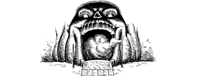

120
At the end of the passage you discover another tunnel that leads off to the left. The walls and ceiling of this adjacent passageway are dripping wet, indicating that it passes directly under the stream. You stride along its narrow confines, your shoulders grazing the muddy walls as you advance up a flight of steps which lead to an archway supported by thick wooden beams. Beyond the arch lies a large subterranean chamber that is daubed and decorated with runes and evil insignia. It is a primitive temple, and it radiates an aura of Evil so vile and malicious that the thought of entering makes your skin crawl.
On the far side of this unholy place, you see a stone altar standing before a huge boulder that has been crudely chiselled to resemble a grinning human skull. An eerie green glow pulsates from the eye sockets of this great skull-rock, and a mist swirls from its open jaw. Wolf’s Bane stands before the altar, an arrogant sneer spreading slowly across his face.
{kind=link}

‘I’d expected better sport from you, Lone Wolf,’ he chides. ‘You disappoint me … but no matter. Such easy triumph proves the worthiness of my master’s cause. I bid you farewell, Lone Wolf. A final farewell.’
And with these chilling words ringing in your ears, your enemy stretches out both of his hands and takes hold of two iron staves that protrude from the ground on either side of the skull-rock’s jaw. He jerks them out of their settings and casts them into the centre of the temple. Then, with a patronising salute, he turns and enters the open jaw, swiftly disappearing into the swirling mist.
The dull boom of an explosion somewhere in the rock above the ceiling makes your heart miss a beat. Moments later, the walls begin to shake and the floor shudders violently beneath your feet, throwing you off balance. Rock and earth cascade from the roof, and fissures tear open the ground. With fear running ice cold in your veins, you begin a desperate race to reach the mouth of the skull-rock before the entire roof collapses and you are buried alive in this doomed temple.
Pick a number from the Random Number Table. If you possess Grand Huntmastery, add 2 to the number you have picked. For every level of Kai rank you have so far attained above the rank of Sun Knight, add 1.
If your total score is now 3 or less, turn to 222.
If it is 4–6, turn to 321.
If it is 7–9, turn to 205.
If it is 10 or higher, turn to 59.